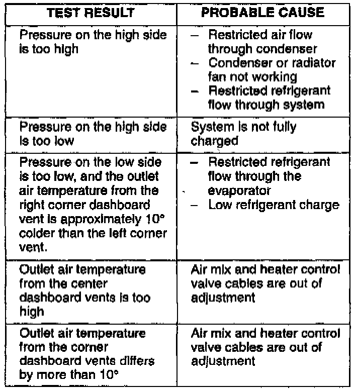
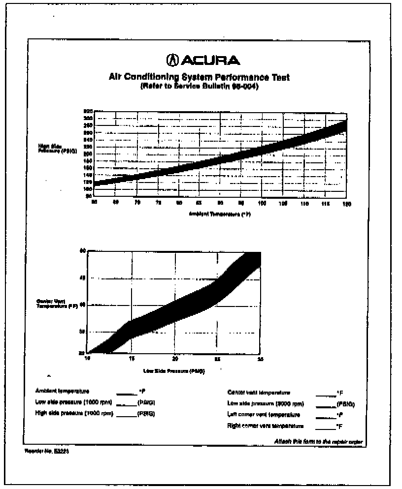

Air Conditioning System - Performance Test
March 5, 1996BULLETIN NO.
96-004
YEAR
1994 and NEWER
MODEL
ALL with R-134a
A/C SYSTEMS EXCEPT SLX
VIN APPLICATION
ALL
Air Conditioning System Performance Test
BACKGROUND
If a customer complains of poor air conditioning performance, use the following measurements and charts to determine if the system is performing within specifications.
NOTE:
For SLX, refer to the procedure for checking the refrigerant system in section 1B of the service manual.
SET UP
Perform these steps before beginning the test. Failure to do so will give inaccurate readings.
1. Move the vehicle out of direct sunlight and let it cool down. The exterior should cool down to ambient temperature before beginning the test.
2. Clean the condenser. If air flow through the condenser is restricted, it can make it appear that the system is fully charged when it is actually low on refrigerant.
3. Close the doors and windows. With the engine running at 1000 rpm, turn on the A/C and run the blower on high with the system in Recirc Mode for 15 minutes.
TEST PROCEDURE
Perform the following pressure and temperature checks. Take the measurements with the compressor running, just before it cycles off.
1. Connect an R-134a recovery/recycling station to the A/C system.
2. Measure the ambient temperature at 12 inches in front of the vehicle with the fans running. Record this temperature on the form.
3. Check the system pressures on the low and high sides with the engine running at 1000 rpm. Record the pressure readings on the form.
4. Measure the outlet air temperature at the dashboard center vents. Record the temperature on the form.
5. Check the system pressure on the low side with the engine running at 3000 rpm. Record the pressure reading on the form.
6. Measure the outlet air temperature at the dashboard corner vents with the engine running at 3000 rpm. Record the temperature readings on the form.
7. Compare your readings to the Pressure Temperature charts to determine if the system is working within specifications.
TEST RESULTS

These are the more common problems that will cause the test results to be out of specifications. For more information, refer to the Pressure Test Chart.
WARRANTY CLAIM INFORMATION
Operation number: 622001
Flat rate time: 0.5 hour
Defect code: 060
Contention code: B01

^ Submit this warranty claim information along with the operation number and flat rate time for one of the procedures in the flat rate manual that requires discharge, repair, evacuation, and recharge of the system. Attach a completed copy of the form (shown at right) to the warranty copy of the repair order.
^ Do not use this Performance Test as the primary operation number on the warranty claim.
^ Do not submit a Performance Test warranty claim with the warranty claim information from any existing service bulletins. Service bulletins describe specific problems and repairs, so a general performance test is not needed.